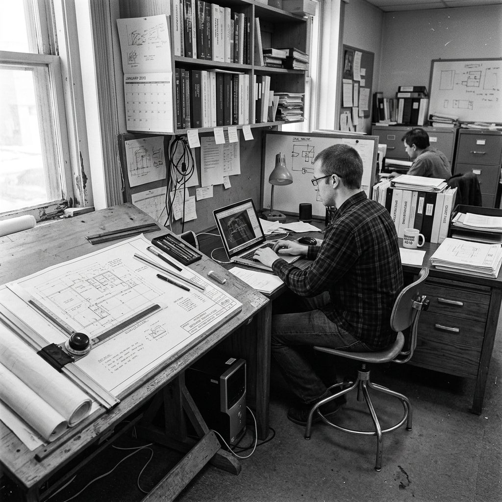

Punto de partida
El Ing. Francisco fundó el gabinete en 2010 al identificar que los comitentes necesitaban más que diseño arquitectónico: necesitaban certeza financiera. En ese momento el equipo constaba de tres profesionales enfocados exclusivamente en auditoría estructural.